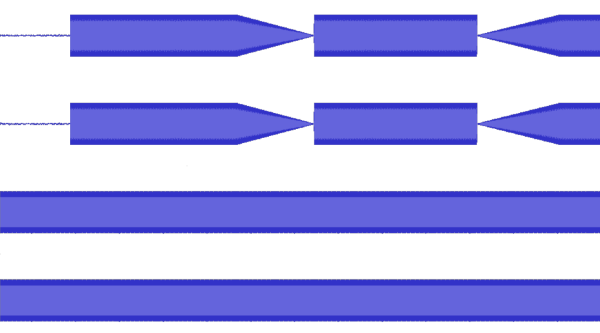
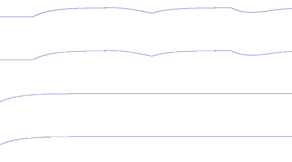

A friend came to me with a request to create an Audacity plugin that, given two stereo audio tracks, takes the second audio track and ensures that it stays X decibels below the first audio track.
The project did not take long after establishing just what it means for a track to be quieter than another, despite me having never written anything in a LISP dialect (Audacity uses Nyquist/XLISP) and some of the oddities of Audacity that I will describe below.
Quieter Audio
Digital audio is more or less stored as a collection of samples of a sound wave, with many discrete points used to approximate a continuous waveform. The friend who asked me to do the project told me that what I should do is set every sample in the second track to the corresponding sample in the first track minus X. This is not at all what was actually wanted, however, as that would merely produce the first track but X decibels quieter - it would not matter what the second track was, it would be entirely overwritten.

My set of starting waveforms (in order of Track 1 Left, Track 1 Right, Track 2 Left, Track
2 Right). Track 1 was generated as a 440 Hz sine wave with some fading to shape it, while
Track 2 was generated as a 4400 Hz uniform sine wave.
Instead what I aimed to do was approximate the “loudness” over time by taking the absolute value of the waveform (so it is always positive), multiplying the waveform by the sqrt(2) (to keep it closer to the peaks of the waveform), and passing it through a low-pass filter (to essentially make it a rolling average).

The result of my loudness function. Note that it approximates the “shape” and “size” of
the prior waveforms.
Audacity Oddities
Audacity plugins are extremely powerful, but there are a few things that can bite you,
especially since Audacity does not natively support running a plugin on multiple tracks.
When you run a plugin on multiple tracks, in runs the plugin sequentially on each track,
one at a time.
For my use, editing a track based on another, this was a problem.
There are two variables that can help solve this, however:
1. The TRACK environmental variable, which has an INDEX property. This property tells which
track the plugin is currently running on. TRACK also contains the data for the current sound.
2. The SCRATCH environmental variable, which is the only usable persistent variable for passing
data between tracks.
My first instinct was to use the TRACK INDEX property to get the loudness waveform from
the first track and store it in the SCRATCH variable. It turns out, however, that Audacity
sounds are just references, and they are cleared after each run of the plugin!
My next thought was to save the waveform as an array of samples, but that would be several
hundred megabytes worth of memory, which isn’t really acceptable.
My solution to this, then, was to loop over the loudness waveform and fill a list with the changes
in loudness as well as the time the change occured. In the second track, I would then recreate
the loudness waveform from that list. It turns out, Audacity already has a function for doing so -
the pwl-list function. This saved me from having to write my own.
Modifying the Second Track
After recreating the loudness of the first track, I find the loudness of the second. By subtracting the two (expressed in decibel form rather than linear) with an offset of X db added to the second track, converting the result back to a linear scale and multiply it by the second track, I am able to ensure that the loudness of the second track mirros the loudness of the first, offset by X db. This works because the decibel unit is logarithmic, and one property of logarithms is log(x) + log(y) = log(x*y). So, to change an amplitude X by Y units, we subtract the two and multiply X by the result expressed back in linear form.

The final set of waveforms. Notice that the second set of waveforms has a similar shape to the first set,
while still keeping its musical properties (in this case, pitch). Perhaps a real song sample would show
the results better - perhaps I will update the article with some public domain songs.
What I’ve done is not even close to being perfect, but it doesn’t really need to be. I feel it was a good introduction to a LISP dialect, and my friend was happy with the results.
The full code is available in this gist:
Direct link